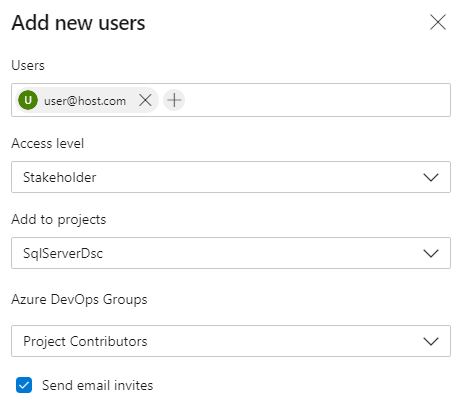

To be administrator you must have 2FA enabled on accounts that give you access to DSC Community resources, for example your GitHub account and the account that access DSC Community Azure DevOps organization.
To create a new GitHub repository in the DSC Community organization, browse to https://github.com/dsccommunity and click on New.
All repositories should always be added with MIT licensing.
NOTE: To be able create repositories you must be an owner of the GitHub DSC Community organization. See GitHub DSC Community organizational owners.
Not written yet.
DSC Community has its own Azure DevOps Organization; https://dev.azure.com/dsccommunity/.
Always create an Azure DevOps project with the same name as the GitHub repository.
NOTE: To be able to do this you need to be a member of the Azure DevOps group Project Collection Administrators.
Stakeholders are always added in the Azure DevOps organization level, not directly on the Azure DevOps project.
You will need either the users Azure Active Directory-account, personal Microsoft-account, or GitHub account. Read more in the article Add users to your organization or project.
The Azure DevOps project should be created before adding stakeholders (maintainers) to the Azure DevOps organization (so that you can connect the project to the maintainer directly).
Add (invite) a stakeholder by going to the Azure DevOps Organization Users, and click on Add user.
Add the maintainer as a stakeholder, add one or more projects, then add the maintainer as member of the Azure DevOps project group Project Contributors.
Make sure to have checked the Send email invites so that the maintainer gets the invite and are able to join.

NOTE: To be able to do this you need to have sufficient privileges in the Azure DevOps Organization. If not then contact @gaelcolas on the Slack #DSC channel and provide him with the e-mail or account (see above) the maintainer has, and the Azure DevOps project the maintainer should have access too.
Prior to doing this, make sure that the working branch was pushed to the
upstream repository since you need to have access to the file
azure-pipelines.yml in the next step.
azure-pipelines.yml by browsing the branch you just pushed above.
Then on the box that says Run, instead just choose Save in the
drop-down list.GitHubToken - This should have the value of the GitHub repository
Personal Access Token (PAT)GalleryApiToken - This should have the value of the PowerShell
Gallery API keyThe Personal Access Token (PAT) that is used by the pipeline is from the @dscbot account (the DSC Community GitHub account).
Log in to the @dscbot account and from there take out a Personal Access Token.
Permissions for the PAT:
Personal Access Token (PAT) expire after 12 months from creation, so every 12 months the PAT must be renewed.
NOTE: There can only be one holder of the DSC Community GitHub account since it is (obviously) using 2FA. Currently the account holder is @johlju.
The DSC Community PowerShell Gallery API key used by the pipeline is created per package so that each key can only publish new version of that specific package.
NOTE: There can only be one holder of the DSC Community PowerShell Gallery account since it is (obviously) using 2FA. Currently the account holder is @gaelcolas.
The steps that should be taken when a new committee member should be added.